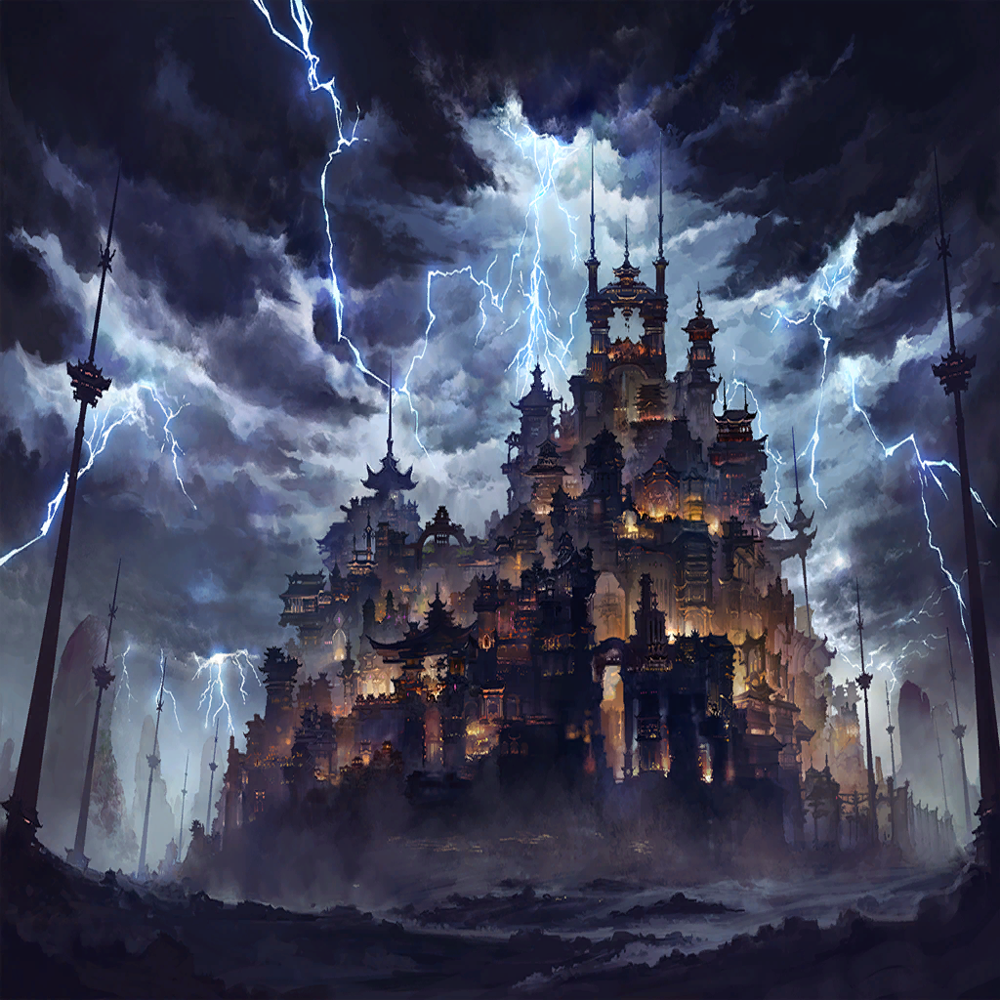

|
 |
| 強欲の戦士Ａ |
異邦の術か…！
確かに強く、早い。だが―― |

ニムル |
何…!? |
| 強欲の戦士Ａ |
我らの命を慮（おもんばか）るその甘さ！
むしろ愚弄（ぐろう）と知るがいい…！ |
ニムル |
ぐぅ…!? |
ニムル |
…強い…！ |
ニムル |
個々の力もさることながら、
この連携の緻密さはなんだ…？ |
ニムル |
まるで、仲間を盾にし
切り捨てることを、
最初から想定していたような… |
| クベラ |
まるで、ではない
それこそが我らの戦いだ |
ニムル |
何…？ |
| クベラ |
斬り合いで血を流すは当然
戦場で命散らすは誉れ
すべてはただひとつの勝利の為に |
| クベラ |
我ら強欲の民の覚悟を甘く見たこと
それが貴様の敗因だ。異邦の客よ |
ニムル |
…ッ、そこまで命を…
軽視するのか…！
貴方がたは…！ |
| クベラ |
仕舞いだな
その強さの深奥、興味はあったが… |
| クベラ |
命を獲り合う場において振るわぬならば、
それは存在せぬのと同じこと
我が測るまでもない |
| クベラ |
始末をつけろ |
| 強欲の戦士Ａ |
ハッ！ |
ニムル |
（く――体が、重い…
さっきの一撃がまだ芯に響いている…） |
ニムル |
（だが、ここで倒れるわけには！
今、ここで俺が死ねば――） |
ニムル |
世界を変革するという夢も――
仲間たちの、安否も――
それ、に… |
ニムル |
…ッ、まだ、だ…！ |
| 強欲の戦士Ａ |
貴様、まだ――！ |
ニムル |
こんなところで、終われない！
俺は――！ |
| ？？？ |
“その憤怒を――我は見たり” |
ニムル |
え…？ |
ニムル |
これ、は――！ |
| 強欲の戦士Ａ |
バカ、な…！ |
| クベラ |
今の力、アレは罪獣の―― |

ビアンカ |
そう――それでいいんだよ、ニムルくん |
ビアンカ |
必要なのはその力――
罪獣の本質と同じ、
“向こう側”から力を引き出す理法 |
ビアンカ |
君のその“錬金術”こそが――
再び“創世”を行う、鍵になるの… |
|  |
| ベニカ |
ふぅ…すっかり遅くなっちゃった |
| ルーク |
きゃぁ？ |
| ベニカ |
うん、そうだね
兄さんのこと、早く迎えに行かないと |
| ベニカ |
いっつも、私が迎えに行くの、
待っててくれるもんね
えへへ… |
| ルーク |
…？ |
| ベニカ |
うん？ どうしたの、ルーク |
| ルーク |
きゃぁ！ |
| ベニカ |
あ、どこ行くの…！ |
| ベニカ |
ルークったら、
何が気になったのかな
こんな路地裏に… |
| ルーク |
きゃあ！ |
| ベニカ |
あ、見つけた！
もう、ダメじゃない
勝手に離れちゃ―― |
| ？？？ |
――ぁ |
| ベニカ |
え？ きゃぁ！ |
| ベニカ |
び、びっくりした…
怪我人、かな？
蟲毒の試練に負けちゃった人？ |
| ？？？ |
ぅ、あ―― |
| ベニカ |
違う、この人…
前に会った、旅の――？ |
ニムル |
――俺は、まだ… |
ニムル |
変え、なければ… |
ニムル |
世界を、すべてを… |
ニムル |
皆の――
エンメルの、笑顔の為に… |
ニムル |
例え――
それが間違いだとしても… |
| ルーク |
きゃあきゃぁ！ |
| ベニカ |
…わかってる
この罪域の掟とは違うけど… |
| ベニカ |
困ってる人が居たら、
助けてあげたいよねっ |
| ベニカ |
ルーク、そっち持って！ |
| ルーク |
きゃあ！ |